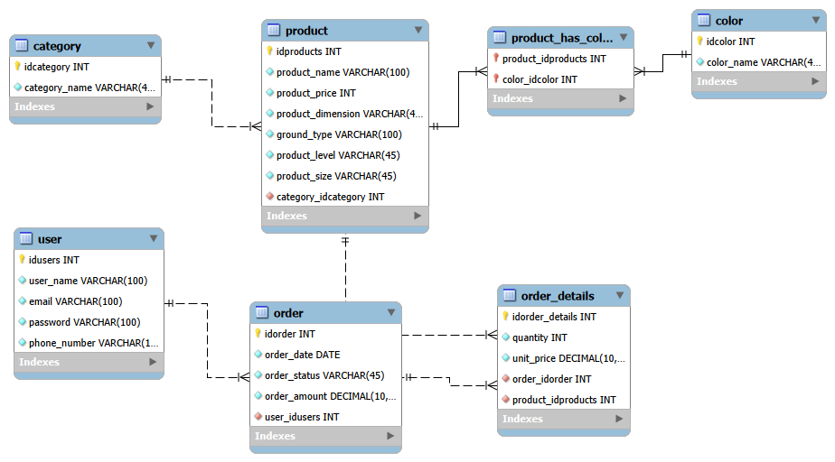
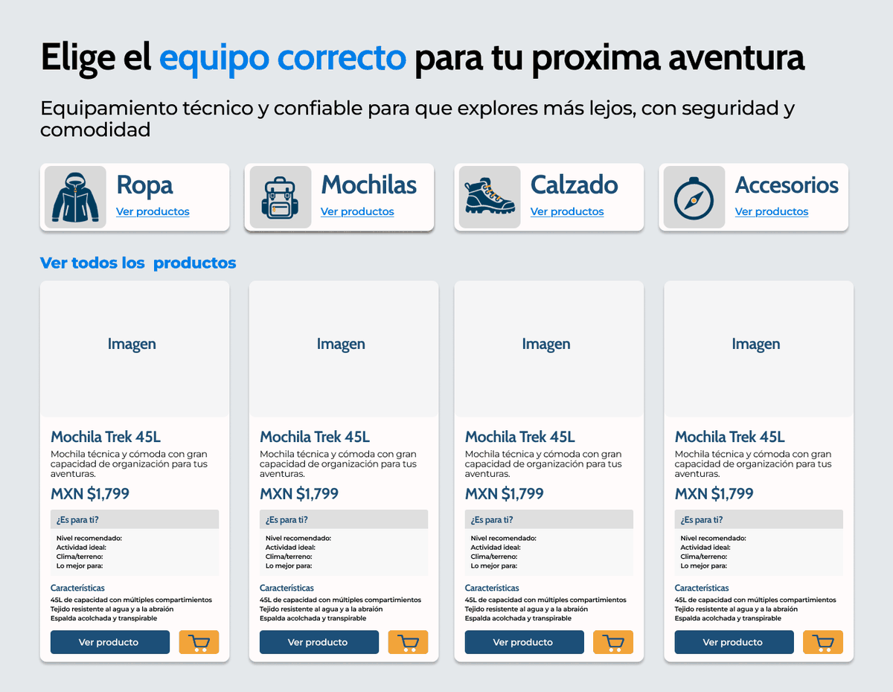
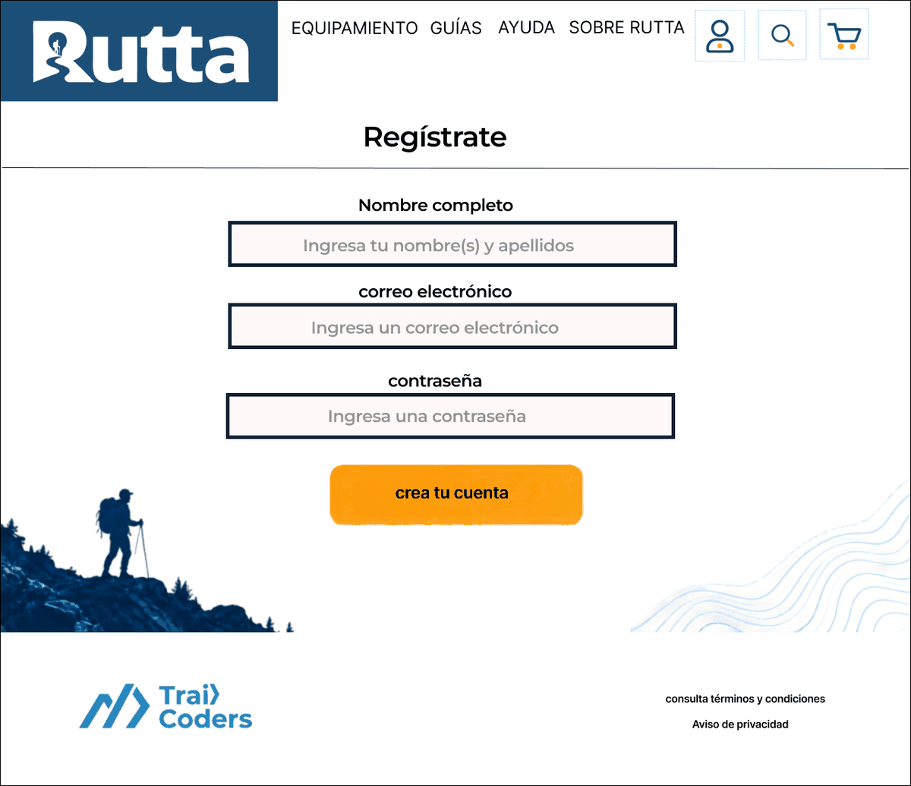
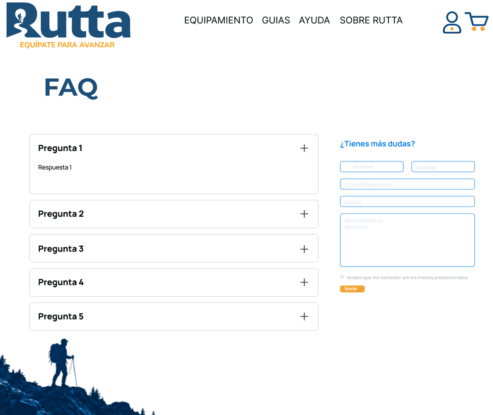

Rutta, e-commerce de equipo
Tienda en línea de equipo de senderismo para personas que empiezan, organizada por nivel de experiencia. Proyecto integrador del bootcamp Java Full Stack de Generation México.
Mi parte: facilitación del equipo, wireframes en Figma, definición del catálogo de productos y apoyo en frontend.
Contexto
Rutta es el proyecto integrador del bootcamp: un e-commerce desarrollado por un equipo de 10 personas. Es una tienda en línea de equipo de senderismo para personas que empiezan. Su catálogo se organiza en tres categorías (Apparel, Footwear y Equipment) y cuatro niveles de experiencia (Principiante, Básico, Intermedio y Avanzado).
Qué hice
- Facilité la dinámica del equipo: moderé las sesiones cuando se estancaban, señalé cuando algo se estaba haciendo mal y estructuré cómo abordar los temas.
- Elaboré en Figma los wireframes del catálogo, del registro de usuarios y de preguntas frecuentes y contacto.
- Definí el catálogo de productos (3 categorías en 4 niveles) con su ficha técnica.
- Apoyé en el frontend y en la definición de las constantes y la estructura del JavaScript del registro de usuarios.
Decisiones
- Un catálogo de 10 productos repartidos de forma equilibrada entre categorías. Lo pensé como un negocio real: un catálogo variado alcanza a más tipos de clientes potenciales.
- Diseñé la mayor parte del modelo relacional de la base de datos. Decidí las entidades del modelo y sus atributos con base en mi experiencia en retail.
Resultado
En desarrollo: el proyecto ya llega a la base de datos (modelo relacional). La presentación final es en octubre de 2026.
Evidencia







